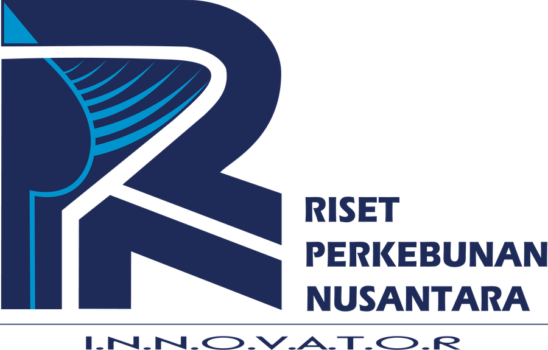

Ratnawati Nurkhoiry, M.Sc
Kepala Bagian Tata Usaha Riset, Inovasi, dan Sustainability / Peneliti Sosio Tekno Ekonomi
PT Riset Perkebunan Nusantara

Kepala Bagian Tata Usaha Riset, Inovasi, dan Sustainability / Peneliti Sosio Tekno Ekonomi
PT Riset Perkebunan Nusantara